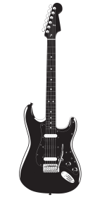

Darth Guitar
Nuestra guitarra más dark, la favorita de Darth Vader.
Con un cuerpo elegante y un acabado oscuro, la Darth Guitar es perfecta para aquellos que buscan un estilo único y poderoso en su instrumento. Su sonido profundo y resonante te transportará a otra galaxia mientras tocas tus acordes favoritos. ¡Únete al lado oscuro de la música con la Darth Guitar!
Esta guitarra viene equipada con pastillas de alta calidad y un mástil rápido que te permitirá explorar nuevos horizontes musicales. Ya sea que estés tocando en casa, en el escenario o en la Estrella de la Muerte, la Darth Guitar es tu aliada para crear música con fuerza y estilo.
160.000 CLP